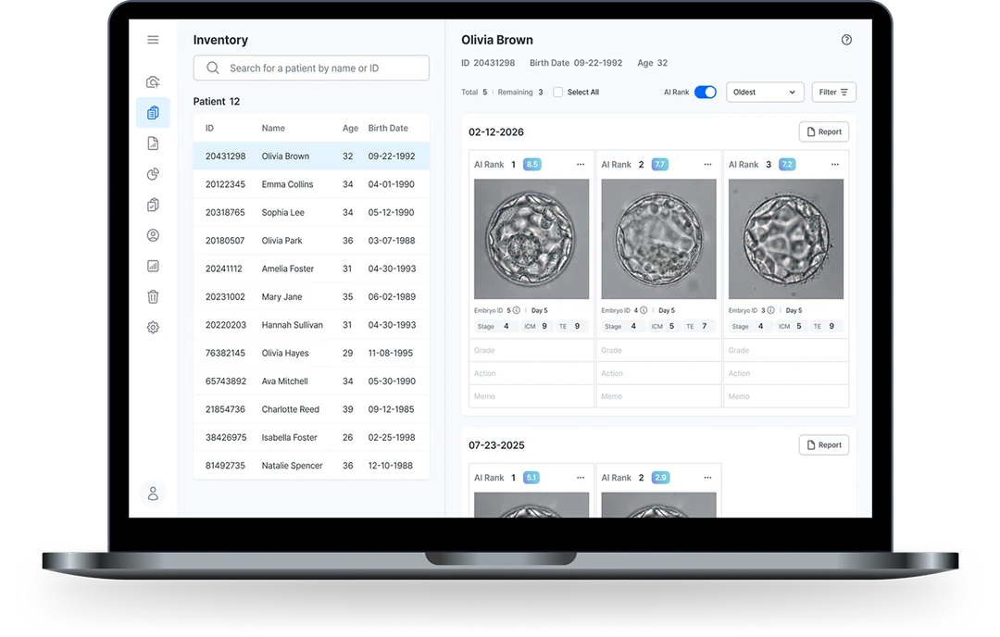

Medical AI
Vita Embryo — AI Embryo Assessment
Led AI diagnostic R&D for embryo assessment (Vita Embryo) to MFDS (Korean FDA) clinical-trial approval, and rebuilt the product lifecycle to cut release cycles from ~2 months to 2–3 weeks.